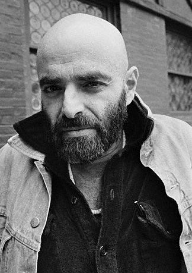

Born into a Jewish family, Silverstein grew up in the Logan Square neighborhood of Chicago, attended Roosevelt High School and, later, the University of Illinois, from which he was expelled. He then enrolled in Chicago Academy of Fine Arts where he was attending when he was drafted into the United States Army. He served in Japan and Korea. He had one daughter, Shoshanna Jordan Hastings, born June 30, 1970, with Susan Taylor Hastings of Sausalito, California. Susan died on June 29, 1975, one day before Shoshanna's fifth birthday, and Shoshanna died April 24, 1982, at age 11, of a cerebral aneurysm. He also had a son named Matthew, born November 10, 1984, with Sarah Spencer of Key West, Florida./h5>